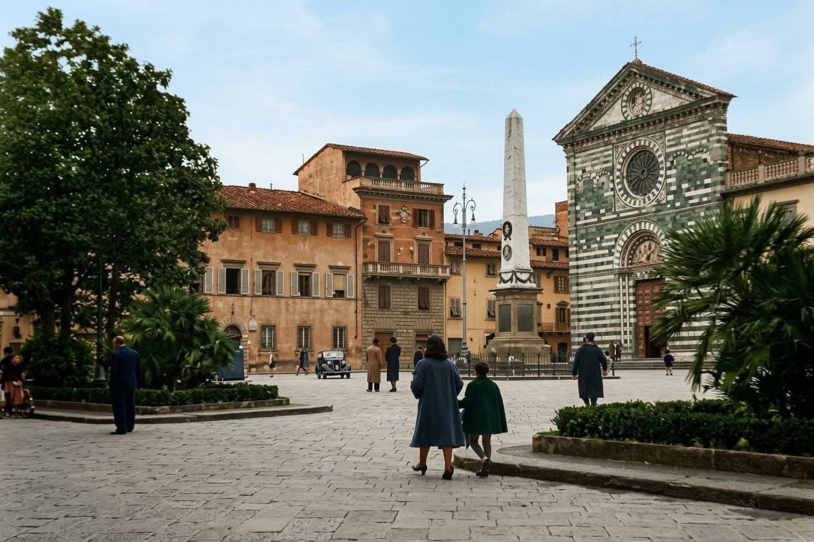
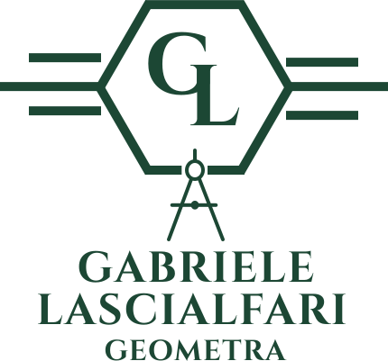
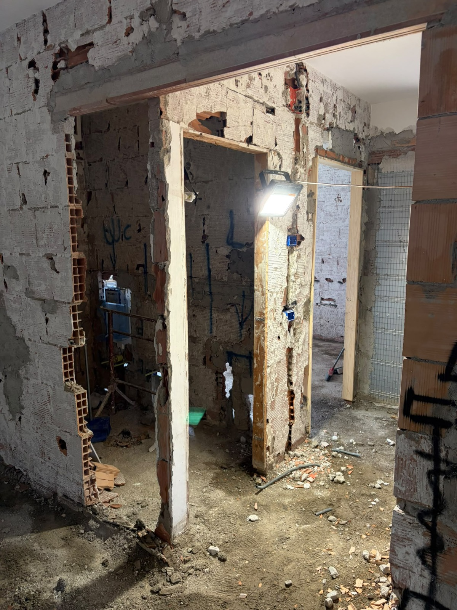

Progettazione e ristrutturazioni
Rilievo dell’immobile, progettazione degli spazi, distribuzione interna e assistenza tecnica per interventi di ristrutturazione.
Scopri la progettazione01 Geometra · Provincia di Prato e Limitrofi
Progettazione, pratiche edilizie, catasto e direzione lavori per ristrutturazioni, compravendite e interventi immobiliari


Competenza tecnica, linguaggio semplice
Sono Gabriele Lascialfari, Geometra
Mi occupo di progettazione, pratiche edilizie e catastali, rilievi e assistenza tecnica per immobili e interventi edilizi.
Seguo ogni incarico con un approccio diretto e concreto: ascolto le esigenze, verifico la situazione esistente e costruisco insieme al cliente il percorso tecnico più adatto.
L’obiettivo è semplice: rendere chiaro ciò che spesso, nel mondo dell’edilizia e immobiliare, sembra complicato
03 / COMPETENZE
Un supporto preciso per privati, imprese e professionisti, costruito sulle necessità reali di ogni intervento.
Rilievo dell’immobile, progettazione degli spazi, distribuzione interna e assistenza tecnica per interventi di ristrutturazione.
Scopri la progettazioneCILA, SCIA, permessi di costruire, pratiche in sanatoria e verifiche della situazione urbanistica dell’immobile.
Scopri le praticheVariazioni catastali, aggiornamento delle planimetrie, fusioni, frazionamenti e regolarizzazione della documentazione catastale.
Scopri il servizio catastaleVerifiche urbanistiche e catastali, rilievi e assistenza tecnica per vendere o acquistare un immobile con maggiore consapevolezza.
Scopri il servizio compravenditeSopralluoghi, rilievi metrici, restituzioni grafiche, verifiche tecniche e consulenze preliminari.
Scopri rilievi e consulenzeAssistenza durante la realizzazione dell’intervento, controllo delle lavorazioni e coordinamento tecnico delle attività di cantiere.
Scopri la direzione lavoriOgni spazio ha
una misura,ogni progetto
una soluzione.04 / AMBITI
Ogni immobile ha una storia diversa. Il mio lavoro parte dalla situazione reale e costruisce il percorso tecnico più adatto.




05 / METODO
Obiettivi, necessità e vincoli del progetto.
Sopralluogo e raccolta dei dati necessari.
Strategia tecnica, tempi e passaggi condivisi.
Assistenza continua fino alla conclusione.
06 / CONTATTI
Raccontami cosa vuoi realizzare o quale problema devi risolvere. Partiamo da una prima valutazione chiara.
Contattami